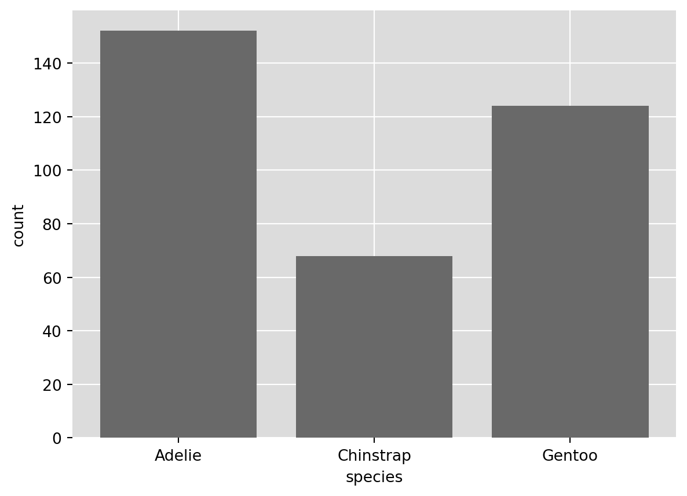
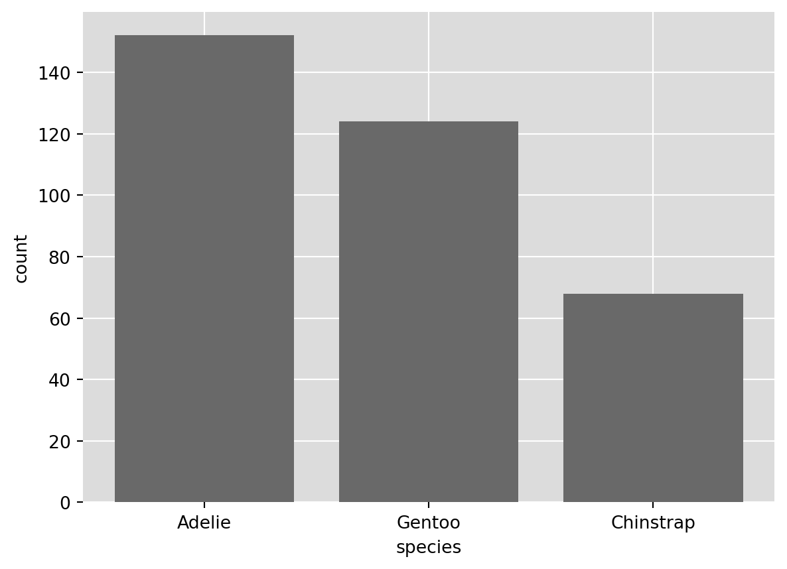
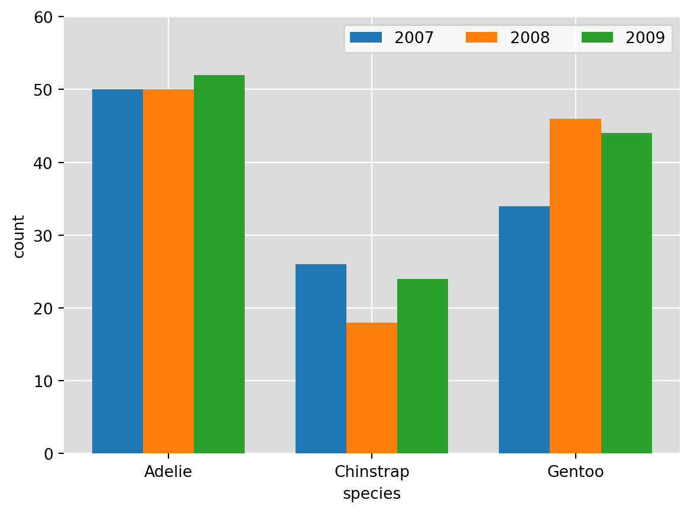

def ggplot2_defaults():
[s.set_visible(False) for s in ax.spines.values()]
# ax.spines['top'].set_visible(False)
# ax.spines['bottom'].set_visible(False)
# ax.spines['left'].set_visible(False)
# ax.spines['right'].set_visible(False)
ax.set_axisbelow(True) ## draws the grid below the bars
ax.grid(visible = True, color = "white") ## turns on grid and sets lines to white
plt.gca().patch.set_facecolor('gainsboro') ## sets grid fill colorA Guide to Visualizing Data with Matplotlib
Prerequisite
This guide assumes that you have Python 3 installed as well as the pandas, numpy, and matplotlib packages.
Setup
The python packages necessary for this guide are:
- pandas
- numpy
- matplotlib
- palmerpenguins
These can be installed via pip.
We’ll begin by loading these packages
import pandas as pd
import numpy as np
import matplotlib.pyplot as plt
from rdatasets import data
from palmerpenguins import load_penguinsand then reading in the data
penguins = load_penguins()
penguins.head()| species | island | bill_length_mm | bill_depth_mm | flipper_length_mm | body_mass_g | sex | year | |
|---|---|---|---|---|---|---|---|---|
| 0 | Adelie | Torgersen | 39.1 | 18.7 | 181.0 | 3750.0 | male | 2007 |
| 1 | Adelie | Torgersen | 39.5 | 17.4 | 186.0 | 3800.0 | female | 2007 |
| 2 | Adelie | Torgersen | 40.3 | 18.0 | 195.0 | 3250.0 | female | 2007 |
| 3 | Adelie | Torgersen | NaN | NaN | NaN | NaN | NaN | 2007 |
| 4 | Adelie | Torgersen | 36.7 | 19.3 | 193.0 | 3450.0 | female | 2007 |
Visualizations
Barchart
count_by_species = penguins.groupby("species").size()
fig, ax = plt.subplots()
ax.bar(x = count_by_species.index, height = count_by_species.values, color = "dimgray");
ax.set_ylabel("count")
ax.set_xlabel("species")
## grid options
## this allow a ggplot2 default experience
ggplot2_defaults()
## sort the bars
count_by_species.sort_values(ascending = False, inplace = True)
fig, ax = plt.subplots()
ax.bar(x = count_by_species.index, height = count_by_species.values, color = "dimgray");
ax.set_ylabel("count")
ax.set_xlabel("species")
ggplot2_defaults()
Side-by-Side Barchart
count_by_species_and_year = penguins.groupby(["species", "year"]).size()
csyr = pd.DataFrame({
"species": count_by_species_and_year.index.get_level_values(0),
"year": count_by_species_and_year.index.get_level_values(1),
"value": count_by_species_and_year.values
})
species_by_year = csyr.pivot(index = "species", columns = "year", values = "value")
x = np.arange(len(species_by_year.index)) # the label locations
width = 0.25 # the width of the bars
multiplier = 0
fig, ax = plt.subplots()
for attribute, measurement in species_by_year.items():
offset = width * multiplier
rects = ax.bar(x + offset, measurement, width, label=attribute)
#ax.bar_label(rects, padding=3)
multiplier += 1
ax.set_ylabel('count')
ax.set_xlabel('species')
ax.set_xticks(x + width, species_by_year.index)
ax.legend(ncols=3)
ax.set_ylim(0, 60)
ggplot2_defaults()